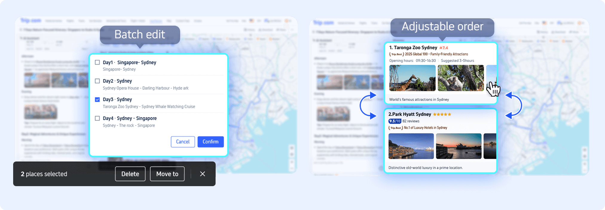

Tripcom 深度评测：亚太出行选它还是 Booking？
用过大大小小七八款在线旅行预订平台后，Tripcom 凭什么在亚太区站稳脚跟。本文从 AI 行程规划、价格追踪、酒店网络三个维度对比同类工具，帮你找准选购定位。
在线旅行预订这个赛道，已经被大厂们挤得密不透风了。Booking 做欧洲起家，Agoda 深耕东南亚，Skyscanner 管着机票比价，携程守着国内——Tripcom 就是在这样的格局里闯出来的国际版玩家。很多人知道它是携程出海的产物，但到底值不值得装，得看你去哪玩、怎么玩。
同类格局里它的位置
先给没概念的朋友补个定位。Tripcom官网是携程面向海外市场推出的品牌，依托母公司的供应链能力，在亚太地区（东南亚、日韩、港澳台）的酒店密度和价格竞争力一直排在第一梯队。和 Booking 比欧洲覆盖它差一截，和 Agoda 比东南亚本地化也各有千秋，但有两个点是同行普遍没有或者做得不够细的：AI 行程规划的地图编辑能力，以及价格提醒和预订流程的集成深度。
这两个差异化，就是我单独写这篇评测的理由——Tripcom 不是「又一个 OTA」，它把几个真能帮用户省时间、少纠结的功能做透了。
差异化一：AI 生成行程后还能地图拖拽调整
市面上不少旅行 App 都有 AI 行程规划了，输入「五天四晚东京」就能吐出一个方案。但问题是——AI 给的方案往往是「正确但不好用」的：景点顺序可能让你绕折返路，时间分配也拍脑袋。大多数 App 在这一步就结束了，用户要么全盘接受要么手动改半天列表。
Tripcom 不一样的地方是它提供了一个真能用的地图编辑器。AI 生成方案后点「地图」标签，所有景点以图标落在地图上，颜色区分每天。长按图标直接拖到另一天，松手后 AI 会重新计算整天的时间分配和景点之间的交通衔接，开放时间、游玩时长、高峰时段这些数据都自动校验（Tripcom文档里有这套校验逻辑的详细说明）——不会把周一闭馆的景点塞进行程，也不会忽略当地早晚高峰对交通时间的影响。

我在规划大阪五日游的时候，AI 原本把环球影城放在第三天、奈良放在第四天，从地理上看奈良应该先去再回环球影城更顺。拖了一下地图上的图标，整个行程重新排完大概只花了 5 秒，交通时间从估算的两小时缩短到四十分钟——这类调整在其他 App 上得手动改每个景点的到达时间，至少折腾十分钟。
差异化二：价格提醒不是「等通知」是「等下单」
机票价格提醒这个功能，Skyscanner（天巡）有，Kayak 也有。但大部分竞品的价格提醒都停留在「监测 + 推送」这一步——收到通知后你得跳回搜索页、重新选择日期、再翻到底价航班才能下单。Tripcom 把提醒和预订流程打通了：设定价格目标后，票价一旦触发，通知点开直接进入该航线的预订页面，不用跨平台、不用重新筛选。
这点在盯热门航线的时候特别有用。去年国庆前我设了上海到东京的价格提醒，当时官网价在两千八左右，我设了两千三。两周后的一个凌晨收到推送，点开直接进入座位选择，前后不到两分钟完成预订。如果用天巡，收到提醒可能还得先确认是哪家航司、然后去对应航司 App 比价、最后才下单，中间慢半拍低价就被抢了。
取舍：便利背后的代价
说这么多优点不是让你无脑装 Tripcom，它的取舍得讲清楚。
首先是欧洲和美洲市场的覆盖。170 万间酒店、220 个国家听起来很全，但如果你的行程主要在欧洲或北美，Booking 或 Hotels.com 的酒店选择通常更多、价格也可能更低。Tripcom 的强项集中在亚太，尤其是东南亚本地精品酒店和日韩商务酒店，这块因为携程供应链的原因有价格优势。
其次是平台限制。Tripcom 在 Google Play、App Store 都能装，官方下载也提供 APK 直链，没有 GMS 服务的安卓设备也能用——这点倒是比不少海外 App 友好。但它的多语言客服和本地化支付方式，在非中文、非英语的小众目的地还是不如当地平台（比如泰国的 KLOOK、日本的乐天旅行）。
最后，AI 行程规划虽然好用，但目前只支持部分热门目的地。如果你的行程是南美小国家或者非洲小众线路，AI 生成的行程质量可能会明显下降，这时候还是得自己查攻略手动拼。
选购结论：谁该装、谁不用
给个明确的选购建议：
- 重点去亚太旅行的人：Tripcom 应该是你手机里必备的 OTA。不管是酒店价格竞争力还是 AI 行程规划能力，在这个区域里它比大部分国际品牌都好用，中文界面和售后客服也对国内用户更友好。
- 机票盯价党：如果你常盯着某条热门航线想蹲低价，Tripcom 的价格提醒是目前体验最顺的，没有之一。
- 主打欧洲/北美深度游的人：Tripcom 可以装但不用当主力——Booking 和 Hotels.com 的覆盖和价格更有优势，Tripcom 用来比价就够了。
- 极简主义只装一个 App：如果一年出不了几次远门、或者行程比较随性不喜欢做规划，那 Tripcom 的 AI 规划和价格追踪这两个核心功能可能用不上，省下空间装 Booking 也没差。
一句话收尾：Tripcom 不是全能王，但在亚太出行这个细分区间，它就是比通用型 OTA 更适合你。本文整理的功能说明和使用示例，分别在GitHub、Gitee、GitCode三个平台同步存放，按需取用即可。